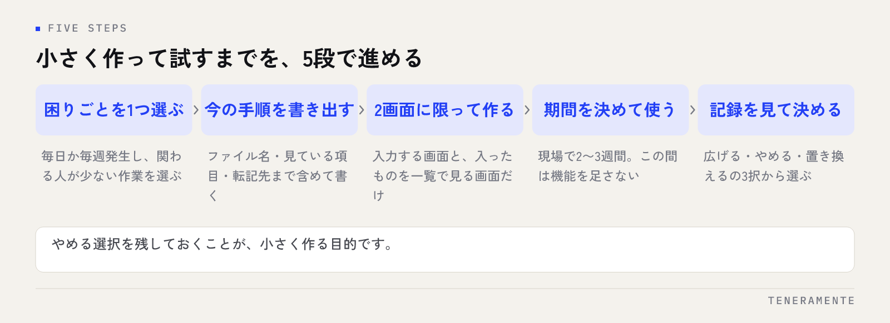

社内ツールを作りたいけれど、いきなり全部を頼むのは怖い。この感覚は正しいです。結論から申し上げると、社内ツールを小さく作るときの単位は「画面の数」ではなく「困りごとの数」です。困りごとを1つに絞れば、作るものは自然と1画面前後に収まり、現場で試してから広げるか決められます。この記事では、小さく作って試すための絞り方と、その状態での頼み方を順番に整理します。
📌 この記事の結論
小さく始めるコツは、機能を削ることではなく対象を1つの困りごとに絞ることです。機能だけを削ると中途半端なものが残りますが、困りごとで絞れば、その1つについては完成した道具になります。試した結果で広げる・やめる・置き換えるを決められる形にしておくことが、小さく作る本当の目的です。
01社内ツールを小さく作ると、何が変わるのか
一度にまとめて作る場合、効果が分かるのは完成して現場で使い始めたときです。それまでに決めた仕様は、すべて「たぶんこう使うはず」という想像の上に積まれています。想像が外れていた部分は、完成後に作り直しになります。
小さく作る場合、最初に手元に届くのは1つの困りごとに対する道具です。現場で数週間使えば、本当に時間が減ったのか、入力が増えただけなのか、誰が使わなかったのかが分かります。判断の材料が、想像ではなく実際の使用結果に変わるのが最大の違いです。
もう一つの違いは、やめる選択が残ることです。全部を作ってしまうと、合わなかったときに引き返しにくくなります。1つの困りごとだけを作ってあれば、合わなかった時点で止めても、失うのは最初の範囲だけです。小さく作るのは安く済ませる工夫ではなく、判断を早く、引き返せるようにする工夫だと考えてください。
02「小さく」の単位は、画面ではなく1つの困りごと
小さく作ると決めた後、多くの人が最初に機能を削ろうとします。検索をなくす、集計を後回しにする、権限を省く。この削り方だと、残るのは「どの困りごとも半分しか解決しない道具」になり、現場では使われません。
絞るときは、業務の中にある困りごとを書き出し、そのうち1つだけを選びます。たとえば次のような粒度です。
- 現場から送られてくる日報を、転記せずに集めたい
- 在庫の数を、誰がいつ更新したのか残したい
- 同じ内容の見積書を、毎回作り直さずに出したい
- 問い合わせの対応状況が、担当者以外からも見えるようにしたい
1つ選べば、必要な画面はおおよそ見えてきます。入力する画面と、入ったものを一覧で見る画面。この2つがあれば、1つの困りごとは成立します。困りごとを1つに絞ると、その1つについては完成品になるという点が、機能を削るやり方との決定的な違いです。社内ツールの作り方そのものの選択肢はノーコードで業務アプリを作るにも整理しています。
03最初に作る1画面を、どう選ぶか
困りごとの候補が複数あるとき、どれを最初に作るかで試した後の判断のしやすさが変わります。選ぶ基準は4つです。
毎日または毎週、必ず発生する作業であること。月に一度の作業では、数週間試しても結果が集まりません。次に、関わる人が少ないこと。最初から全社の承認が絡む作業を選ぶと、使い方を揃えるだけで時間が過ぎます。
三つ目は、今の手順が説明できることです。Excelのどのファイルを開き、何を見て、どこに書くか。これを口で説明できる作業は、そのまま仕様になります。説明できない作業は、まず手順を整えるほうが先です。四つ目は、効果が目で分かることです。転記の回数、探す時間、聞き直す回数のように、減ったかどうかが分かるものを選びます。
| 選ぶ基準 | 向いている作業 | 避けたい作業 |
|---|---|---|
| 発生の頻度 | 毎日・毎週の定型作業 | 月次や年次の作業 |
| 関わる人数 | 1〜数名で完結する作業 | 複数部署の承認が絡む作業 |
| 手順の明確さ | 今の流れを口で説明できる | 担当者ごとにやり方が違う |
| 効果の見え方 | 転記・探す・聞き直すが減る | 「やりやすくなる」だけ |
| 既存データ | 今あるExcelをそのまま使える | 新しくデータを集め直す必要がある |
この5行で候補を並べると、最初に作るものはほぼ自動的に決まります。迷ったときは、頻度が高く、関わる人が少ないものを選んでください。
04小さく頼むときは、この順番で進める
小さく作る場合も、進め方の順番は決まっています。この順番を飛ばすと、小さいのに時間がかかる、という状態になります。

まず困りごとを1つ選び、文字で書きます。次に、今の手順をそのまま書き出します。使っているファイル名、見ている項目、転記している先まで含めて書きます。この時点で、作るものの8割は決まっています。
そこから作るのは、入力と一覧の2画面に絞ります。設計の相談と作成を含めて数週間の範囲に収まる規模です。出来上がったら、現場で2〜3週間そのまま使います。この期間は機能を足さず、使い方を変えないでください。足しながら試すと、何が効いたのか分からなくなります。
最後に、記録を見ながら続けるかを決めます。見るのは、使われた回数、入力にかかった時間、使われなかった項目の3つです。使われなかった項目は、次に作るときに外す材料になるので、必ず記録しておいてください。進め方の全体像は打ち合わせで決めることもあわせてご覧ください。
05依頼するときに渡すもの
小さく頼むときほど、渡す材料が効きます。資料を作る必要はなく、今あるものをそのまま出すのが最短です。
- 困りごとを1行で書いたもの（「何が、どれくらい手間か」まで）
- 今使っているExcelやスプレッドシートの実物（匿名化で構いません）
- その作業を今どうやっているかの手順（箇条書きで5〜10行）
- 作業に関わる人の数と、役割の違い（入力する人、見る人）
- 1日・1週間に何件発生するか（おおよその件数）
- 絶対に守りたい条件（社外に出せないデータがある、など）
- 試す期間の目安と、誰が試すか
- 今回は作らないと決めたこと（集計、権限、外部連携など）
最後の項目を書けると、話が速く進みます。作らないものを先に決めておくと、相談の途中で範囲が膨らむのを防げます。相談の段階では完璧である必要はなく、今の手順の実物があるかどうかで進み方が変わります。
渡し方のコツ
Excelは整えずに、普段使っている状態のまま渡すほうが役に立ちます。空欄、手書きの備考、担当者ごとの書き方の違い。そうした実際の状態こそが、設計で考慮すべき条件です。きれいに整えてから渡すと、現場で起きていることが見えなくなります。
06試した後、広げる・やめる・置き換えるの3択
数週間使った後に取れる選択は3つです。どれを選んでも失敗ではないという前提を、始める前に共有しておいてください。
広げる場合は、同じ考え方で次の困りごとを1つ足します。このとき、前回使われなかった項目は外し、現場から出た要望のうち毎回出たものだけを入れます。1回しか出なかった要望は、まだ入れません。
やめる場合は、作ったものを止めて元の手順に戻します。損失は最初の範囲だけで、得られるのは「この作業はツール化しても効果が薄い」という判断材料です。これは次の投資先を決めるときに効いてきます。
置き換える場合は、既製のサービスで足りることが分かったときです。試して初めて、自社で作る必要がある部分と、既にあるもので足りる部分が分かれます。この見極めは自社開発か既製サービスかの判断材料にもなります。3択を先に決めておくと、試す期間の記録の取り方が変わります。
07よくある失敗と、その避け方
機能を削って小さくする。検索も集計も権限も省くと、どの困りごとも半分しか解決しません。機能ではなく対象の困りごとで絞ってください。
試しながら機能を足す。足しながら使うと、効いたのが元の設計なのか追加分なのか分からなくなります。試す期間は固定してください。
試す担当を決めていない。「みんなで使ってみてください」で始めると誰も使いません。最初に試す人を名前で決め、その人の作業時間を確保してください。
記録を取らずに終わる。使った回数と使われなかった項目を記録していないと、広げるときの判断が勘に戻ります。簡単なメモで構いません。
最初から全社の作業を選ぶ。関わる人が多い作業は、使い方を揃えるだけで数週間かかります。1〜数名で完結する作業から始めてください。
やめる選択を用意していない。やめられない前提で始めると、合わなかったときに使われないものが残り続けます。3択を先に共有しておいてください。
小さいから見積もりもいらないと考える。範囲が小さくても、何をどこまで作るかは文字で残してください。小規模な依頼ほど、口約束で範囲が広がりやすい部分です。
08自分で進める場合と、専門家に任せる場合の分かれ目
一般論として、判断の基準は3つあります。
一つ目は、扱うデータの性質です。社内の人だけが見る記録を、社内の人だけで使う場合は、表計算やノーコードの道具で自分たちで作る選択が現実的です。社外のお客様の情報や、取引の金額が入る場合は、権限の設計やデータの保管に関する判断が必要になるため、外部の目を入れたほうが安全です。
二つ目は、作った後に直す人が居るかどうかです。自分たちで作る方法の最大の利点は、思いついたその日に直せることです。逆に、作った人が異動や退職で居なくなると、誰も触れないものが残ります。社内に直し続ける人を置けるかどうかが、自分で作るかどうかの分かれ目になります。
三つ目は、既存の仕組みとつなぐ必要があるかどうかです。入力と一覧だけで完結するなら、自分たちで作れる範囲です。会計や在庫、基幹の仕組みと自動でつなぐ段階では、相手側の仕様を読む作業が入るため、専門的な判断が必要になります。
迷うときは、最初の1画面は自分たちで作ってみて、2つ目で判断するのが無理のない順番です。1つ作ると、自社でどこまでできるかが具体的に分かります。
09よくある質問
小さく作ると、後で作り直しになりませんか？
最初の1画面は、どれくらいの期間で作れますか？
試す期間は、どれくらい取ればよいですか？
現場から要望がたくさん出たときは、どうすればよいですか？
小さく始めるのに向かない業務はありますか？
10まとめ：1つの困りごとを、完成させるところから
社内ツールを小さく作って試す手順は決まっています。困りごとを1つに絞る。今の手順をそのまま書き出す。入力と一覧の2画面に限って作る。期間を決めて現場で使い、機能を足さない。使われた回数と使われなかった項目を記録する。その記録を見て、広げる・やめる・置き換えるを決める。この形なら、投資の判断を想像ではなく結果で下せます。
逆に、機能を削って小さくしようとすると、どの困りごとも半分しか解決しない道具が残ります。小さくするのは機能ではなく対象です。
TENERAMENTEなら、この記事で挙げた「最初の1画面を決める」段階からご一緒できます。現在お使いのExcelとその使い方を見せていただき、どの困りごとから作ると効果が確かめやすいかを整理したうえで、入力と一覧に絞った形で作り、短い期間で現場に出します。試した結果を見ながら次に足すものを決めていくので、使われない機能にお金をかけずに済み、広げる判断もやめる判断もその都度できます。小さく始める開発の進め方はAI業務アプリ開発にまとめています。初回のご相談60分は無料ですので、どの作業から手を付けるか決まっていない段階でも、お問い合わせからお気軽にご相談ください。